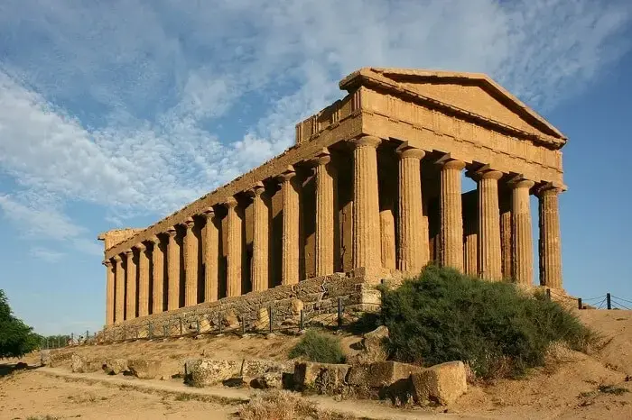

Sobre o Modelo
O Templo Grego era uma construção dedicada aos deuses do panteão grego. O mais famoso é o Partenon, em Atenas, erguido em homenagem à deusa Atena.
Origem
Grécia Antiga
Data Histórica
Entre os séculos VI a.C. e IV a.C.
Curiosidades
- Possuíam colunas nos estilos Dórico, Jônico e Coríntio.
- Serviam como locais de culto, rituais e oferendas aos deuses.
- O Partenon é o exemplo mais famoso, construído entre 447 e 432 a.C.